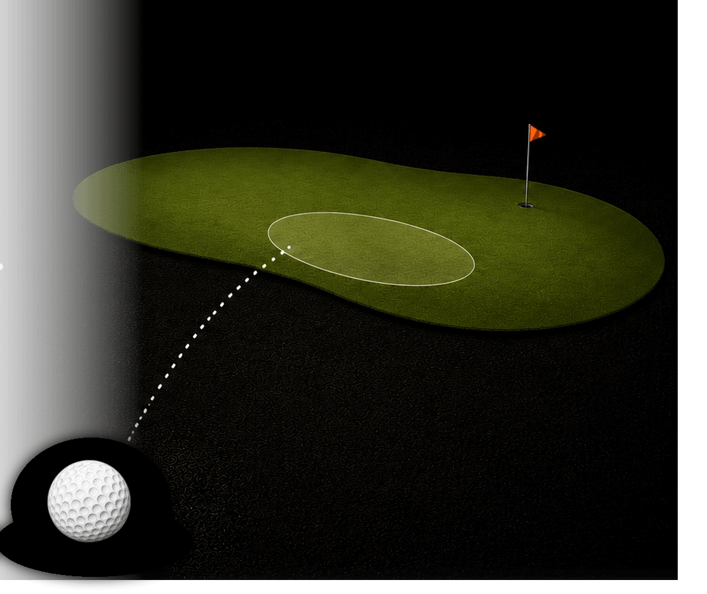

GPS play tools
Use course guidance and on-course tools to choose smarter targets and make clearer playing decisions.

Clarity Caddy is a golf GPS and coaching-support app that helps players make clearer on-course decisions.
The Clarity Loop
Golf GPS + coaching support
The app provides GPS-based course guidance, golf bag distance setup, player profile tools, practice-data features, and coaching-related decision support.
Use course guidance and on-course tools to choose smarter targets and make clearer playing decisions.
Set up club distances so the app can support practical decisions around club choice and shot planning.
Use practice information to support coaching conversations and connect practice patterns to golf-course decisions.
What's in the app
Distances, slope, wind and offline maps are table stakes. What Clarity adds is your own shot pattern, carried from practice onto the tee.
The Bubble system, and the loop around it.
Set once, used on every shot.
Paid access
Players may purchase short-term access passes or memberships for selected app features, including GPS play tools, practice-data tools, saved player data, and coaching-support features.
Support
For support, contact Sam Hale Golf at samhalegolf@gmail.com.